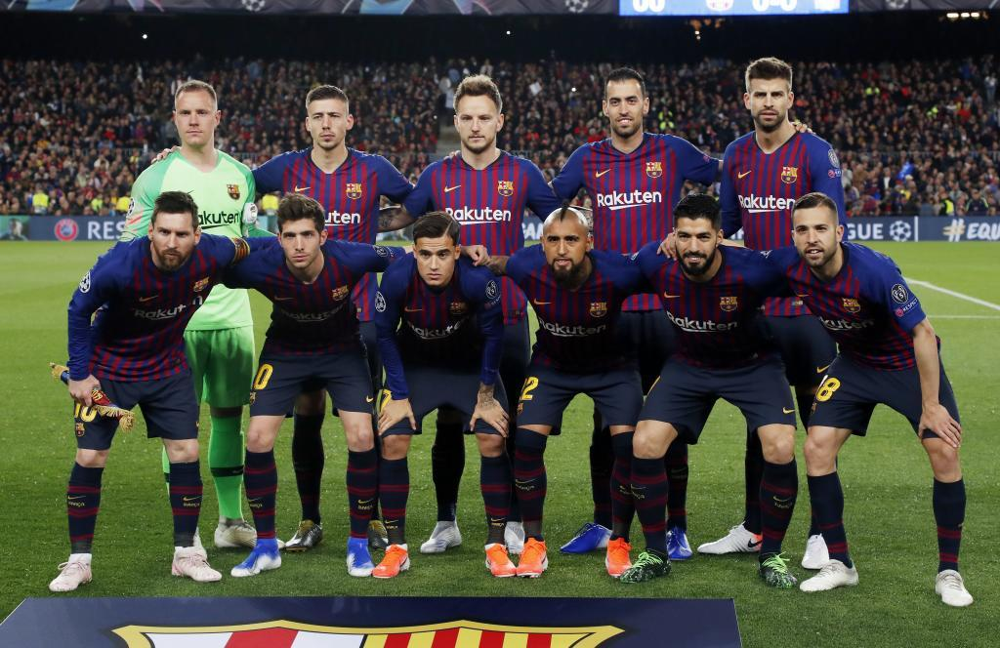
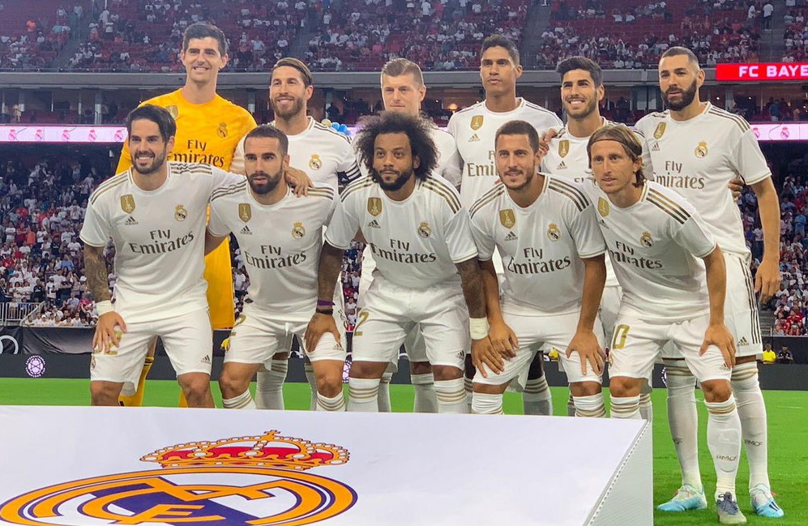
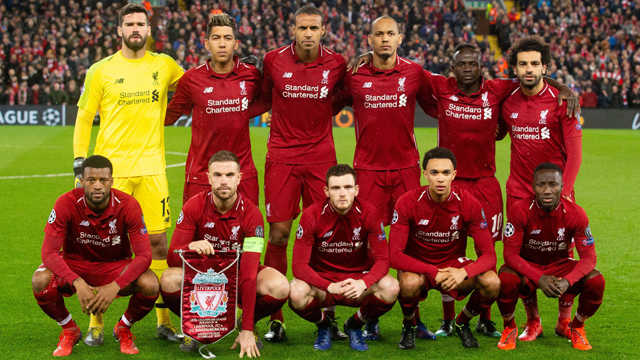
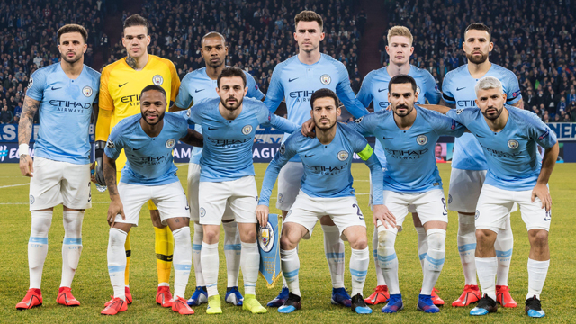
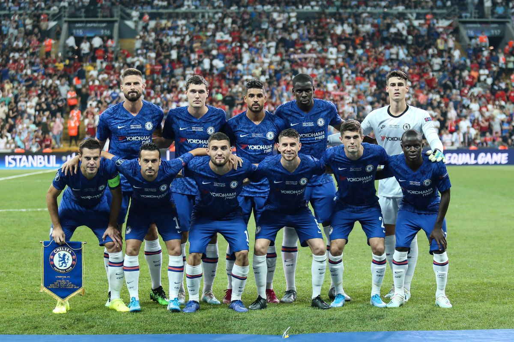

Our goal:
We will provide you with the most perfect and most accurate statistics for the top 5 teams in the world

Barcelona
La Liga:
1929, 1945, 1948, 1949, 1952, 1953, 1959, 1960, 1974, 1985, 1991, 1992, 1993, 1994, 1998, 1999, 2005, 2006, 2009, 2010, 2011, 2013, 2015, 2016, 2018 and 2019
Copa del Rey:
11910, 1912, 1913, 1920, 1922, 1925, 1926, 1928, 1942, 1951, 1952, 1953, 1957, 1959, 1963, 1968, 1971, 1978, 1981, 1983, 1988, 1990, 1997, 1998, 2009, 2012, 2015, 2016, 2017 and 2018
Supercopa de España:
1983, 1991, 1992, 1994, 1996, 2005, 2006, 2009, 2010, 2011, 2013, 2016 and 2018.
Copa de la Liga:
1983 and 1986.
UEFA Champions League:
1992, 2006, 2009, 2011 and 2015
UEFA Cup Winners' Cup:
1979, 1982, 1989 and 1997
FIFA Club World Cup:
2009, 2011 and 2015
Inter-Cities Fairs Cup:
1958, 1960 and 1966
UEFA Super Cup:
1992, 1997, 2009, 2011 and 2015.
Real Madrid
La Liga:
1932, 1933, 1954, 1955, 1957, 1958, 1961, 1962, 1963, 1964, 1965, 1967, 1968, 1969, 1972, 1975, 1976, 1978, 1979, 1980, 1986, 1987, 1988, 1989, 1990, 1995, 1997, 2001, 2003, 2007, 2008, 2012 and 2017
Copa del Rey:
1905, 1906, 1907, 1908, 1917, 1934, 1936, 1946, 1947, 1962, 1970, 1974, 1975, 1980, 1982, 1989, 1993, 2011 and 2014
Supercopa de España:
1988, 1989, 1990, 1993, 1997, 2001, 2003, 2008, 2012 and 2017
Copa de la Liga:
1985
UEFA Champions League:
1956, 1957, 1958, 1959, 1960, 1966, 1998, 2000, 2002, 2014, 2016, 2016/17 and 2018
Intercontinental Cup:
1960, 1998 and 2002
FIFA Club World Cup:
2014, 2016, 2017 and 2018
UEFA Cup:
1985 and 1986
UEFA Super Cup:
2002, 2014, 2016 and 2017


Liverpool
Premier League:
1900–01, 1905–06, 1921–22, 1922–23, 1946–47, 1963–64, 1965–66, 1972–73, 1975–76, 1976–77, 1978–79, 1979–80, 1981–82, 1982–83, 1983–84, 1985–86, 1987–88 and 1989–90
Championship:
1893–94, 1895–96, 1904–05 and 1961–62
FA cup
1964–65, 1973–74, 1985–86, 1988–89, 1991–92, 2000–01 and 2005–06
FA Charity / Community Shield:
1964, 1965, 1966, 1974, 1976, 1977, 1979, 1980, 1982, 1986, 1988, 1989, 1990, 2001 and 2006
UEFA Champions League
1976–77, 1977–78, 1980–81, 1983–84, 2004–05 and 2018–19
UEFA Cup:
1972–73, 1975–76 and 2000–01
UEFA Super Cup:
1977, 2001, 2005 and 2019
Manchester City
Premier League:
1936–37, 1967–68, 2011–12, 2013–14, 2017–18, 2018–19
Championship:
1898–99, 1902–03, 1909–10, 1927–28, 1946–47, 1965–66, 2001–02
FA cup
1903–04, 1933–34, 1955–56, 1968–69, 2010–11, 2018–19
FA Charity / Community Shield:
1937, 1968, 1972, 2012, 2018, 2019
UEFA Cup:
1969–70


Chelsea
Premier League:
1954–55, 2004–05, 2005–06, 2009–10, 2014–15, 2016–17
Championship:
1983–84, 1988–89
FA cup
1969–70, 1996–97, 1999–2000, 2006–07, 2008–09, 2009–10, 2011–12, 2017–18
FA Charity / Community Shield:
1955, 2000, 2005, 2009
UEFA Champions League
2011–12
UEFA Cup:
2012–13, 2018–19
UEFA Super Cup:
1998